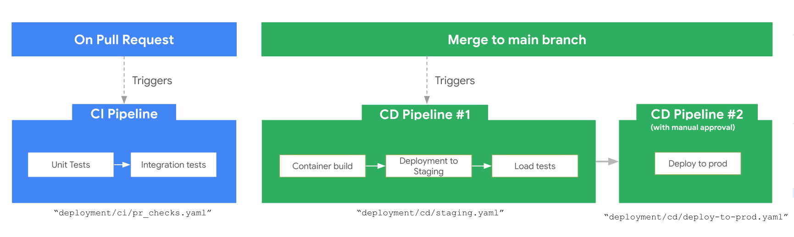

배포¶
개발 환경 또는 CI/CD 파이프라인을 통한 운영 환경에 에이전트를 배포하세요.

인프라 대 배포¶
인프라 (agents-cli infra)는 서비스 계정, IAM 바인딩, API, 텔레메트리 버킷, Terraform 상태 등 에이전트에 필요한 클라우드 리소스를 프로비저닝합니다. 배포를 위한 기반을 마련하지만 에이전트를 직접 실행하지는 않습니다.
배포 (agents-cli deploy)는 에이전트 코드를 받아 프로비저닝된 인프라에 올립니다. 컨테이너를 빌드하고 레지스트리에 푸시한 후 서비스를 시작합니다.
일반적인 흐름: 먼저 인프라를 프로비저닝한 다음, 그 위에 배포를 진행합니다.
개발 환경에 배포하기¶
배포를 실행하는 가장 간단한 방법:
1. 개발 프로젝트 설정:
2. 에이전트 배포:
이 명령은 agents-cli-manifest.yaml(create_params 항목 아래)에서 deployment_target을 읽어 적절한 흐름으로 전달합니다:
deployment_target |
수행되는 작업 |
|---|---|
agent_runtime |
Agent Runtime 배포 (완전 관리형) |
cloud_run |
gcloud beta run deploy (Cloud Run 상의 컨테이너) |
gke |
Terraform + Docker 빌드 + kubectl apply |
배포 타깃은 프로젝트를 생성할 때 설정됩니다:
기존 프로젝트의 배포 타깃을 변경하려면 scaffold enhance를 사용하세요:
사용 가능한 모든 옵션을 확인하려면 agents-cli scaffold enhance --help를 실행하세요.
Tip
관측 가능성(Observability) 기능(프롬프트-응답 로깅, 콘텐츠 로그 등)을 활성화하려면 배포 후 agents-cli infra single-project를 실행하세요. Terraform이 텔레메트리 리소스를 프로비저닝하고 해당 리소스를 사용하도록 서비스를 업데이트합니다. 자세한 내용은 관측 가능성 가이드를 참고하세요.
작동 여부 확인:
배포 타깃¶
Agent Runtime¶
agents-cli create my-agent -d agent_runtime으로 선택하거나 agents-cli-manifest.yaml의 create_params.deployment_target: agent_runtime으로 설정합니다.
완전 관리형 런타임입니다. (자동 생성되는) Dockerfile을 제공하면 Agent Engine이 컨테이너를 빌드하고 실행하므로 직접 운영할 클러스터나 서비스가 필요하지 않습니다:
Docker 빌드 인자나 컨테이너 포트를 전달할 수 있습니다. 사전 빌드된 --image는 지원되지 않습니다(Agent Runtime은 항상 Dockerfile에서 빌드함):
비동기 배포 상태 확인:
Cloud Run¶
agents-cli create my-agent -d cloud_run으로 선택하거나 agents-cli-manifest.yaml의 create_params.deployment_target: cloud_run으로 설정합니다.
소스 코드에서 컨테이너를 빌드하여 Cloud Run 서비스로 배포합니다:
리소스 제한 오버라이드:
소스 빌드 대신 사전 빌드된 이미지 배포:
Tip
agents-cli 플래그를 통해 제공되지 않는 더 고급 Cloud Run 배포 기능이 필요한 경우, --dry-run(또는 -n)을 사용하여 전체 gcloud 명령을 출력하세요. 그 후 명령을 복사하여 필요한 플래그를 추가로 붙여 실행할 수 있습니다.
GKE¶
agents-cli create my-agent -d gke로 선택하거나 agents-cli-manifest.yaml의 create_params.deployment_target: gke로 설정합니다.
Terraform과 kubectl을 사용하여 GKE 클러스터에 배포합니다:
다음 단계¶
- CI/CD 및 프로덕션 — 스테이징 및 프로덕션을 위한 자동화 파이프라인 설정
- 관측 가능성 — 배포된 에이전트 모니터링